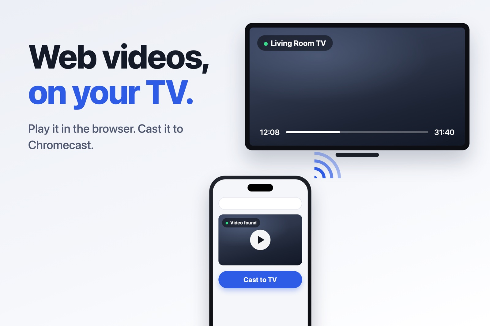
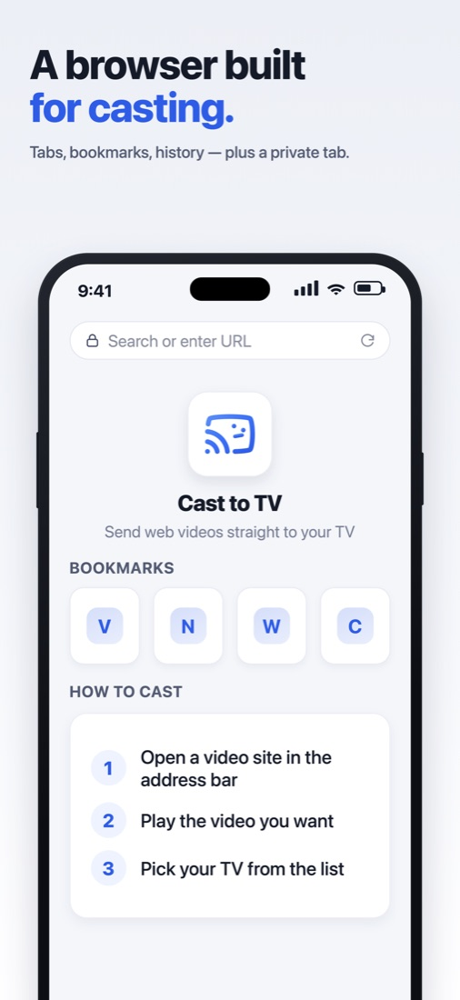
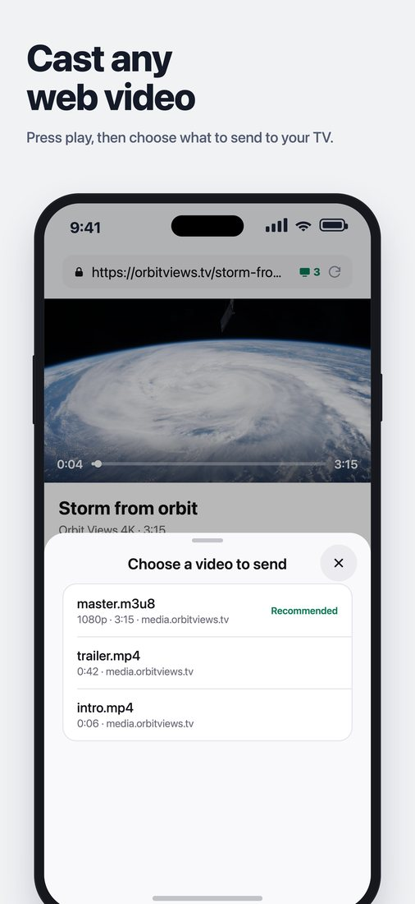
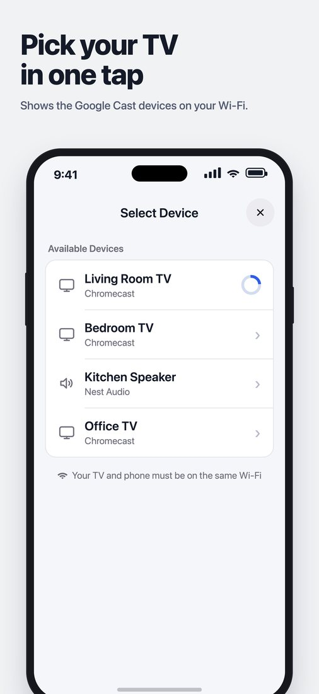
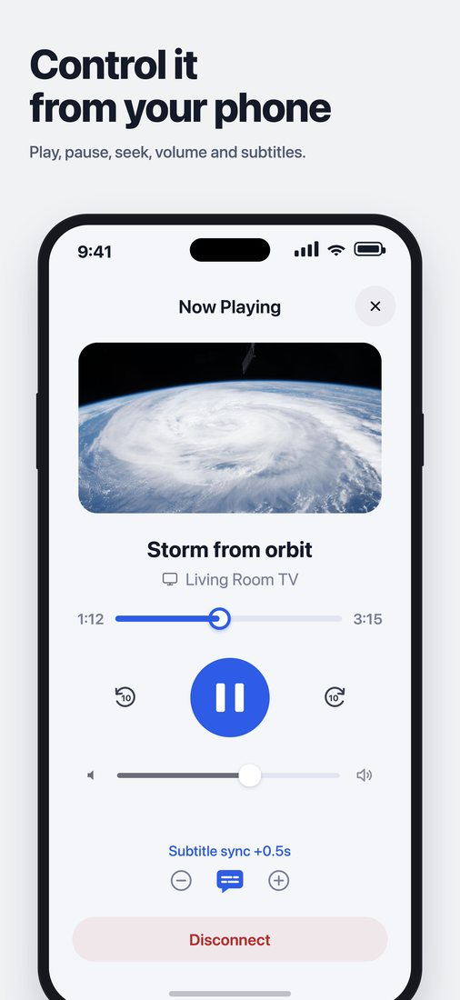
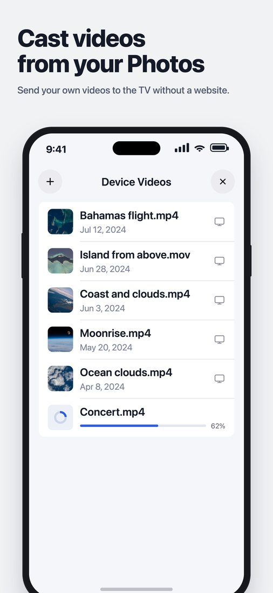

iPhone × Chromecast
Safari videos,
straight to your TV
Safari on iPhone has no Chromecast button.
One app fixes that. Open the video, play it, pick your TV. Done.

Get Cast to TV — FreeJust 3 steps



It's not mirroring — your TV plays the original stream directly.
Use your phone for anything else in the meantime.
What it can do
- M3U8 live streams, MP4, WebM and MOV videos
- Subtitles (WebVTT)
- Videos saved on your phone, on the TV
- Play, pause and seek from the lock screen
- Keeps playing on the TV while you use other apps
- TV volume from the app


Free, and kept up to date
No subscription — it's free (with ads). Casting reliability and site support keep improving with every update. If a site doesn't work, let us know in an App Store review.
💡 Netflix or YouTube?
Use the cast button in each service's official app. Cast to TV is for videos on other websites.
💡 TV not showing up?
Check you're on the same Wi-Fi → allow the app in iPhone Settings › Privacy & Security › Local Network → turn off VPN
Google Cast and Chromecast are trademarks of Google LLC. Cast to TV is not affiliated with Google. Only cast content you have the right to view.